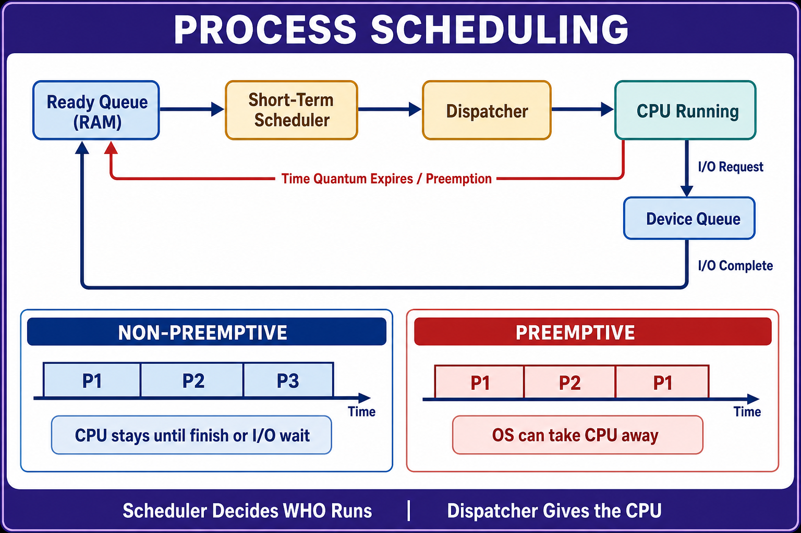

Process Scheduling
Scheduling queues, CPU allocation, context switching, and preemptive versus non-preemptive scheduling.

Scheduling queues, CPU allocation, context switching, and preemptive versus non-preemptive scheduling.
